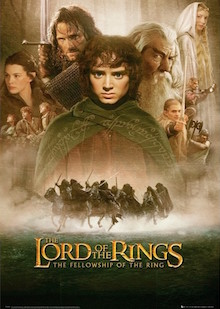
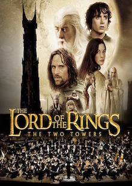
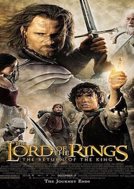

Danish/American 20 y/o High School student, dream of becoming an entrepreneuer. My brothers an alumi and he inspired me to start this course. Hope to gain coding competence to realize my dream and start some projects
|  |
Lord Of The Rings - FellowshipPeter Jackson 2001 |
|  |
Lord Of The Rings - Two TowersPeter Jackson 2002 |
|  |
Lord Of The Rings - Return Of the KingPeter Jackson 2001 |